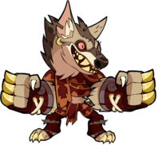
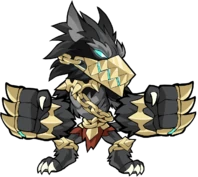
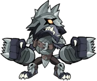
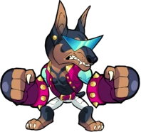
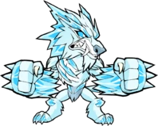
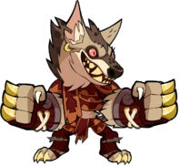
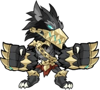
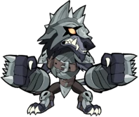
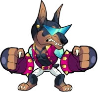
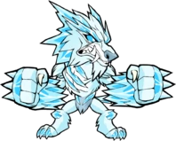

O Voraz
"Nas noites mais frias e escuras, sua fome aumenta!"


Não é fácil se tornar um licantropo de propósito. Uma mordida de lobisomem raramente funciona, porque a mordida quase sempre é seguida por ser comido por um lobisomem. Então, quando Octavius Mordex, Mestre Caçador da Ordem do Leão Exaltado, recebeu a ordem de levar sua equipe ao norte congelado para caçar uma praga de lobisomens e gigantes do gelo, ele sabia que tinha que planejar sua traição com cuidado. Mordex abriu caminho para a nobre Ordem não para fazer o bem, mas para se aproximar dos monstros cujos poderes ele tanto desejava. Ele derrubou o Culto da Bruxa do Gelo, mas relatou seu Tomo de Rituais "perdido no fogo". Ele destruiu o Wraith de Darkmoor, mas secretamente pegou a grande foice do demônio Cull para si mesmo. E agora ele viu sua chance de ganhar poder de um tipo totalmente novo. Um ano depois, Mordex voltou do norte com uma história de horror e vitória. Preso em uma tempestade de gelo profana, sua equipe cercada por lobisomens e gigantes, ele contou uma história de fome, desespero e batalha heróica. Ele foi o único sobrevivente. Ninguém questionou que o próprio Mordex parecia muito bem alimentado. Seguiu-se aclamação e promoção. Logo, apenas a vigilância de outro caçador, Diana , estava entre ele e seu alvo final: o Geminius Virens - um artefato amaldiçoado escondido nos cofres mais profundos da Ordem. Invocando magia negra, ele emboscou Diana e escapou com seu prêmio. Em Valhalla, Mordex fica horrorizado e encantado ao descobrir que o monstro é sua verdadeira forma. Valhalla forma alianças estranhas, e Mordex encontra-se de acordo com os gostos de Thatch e Azoth , para a fúria de seu inimigo.
 








